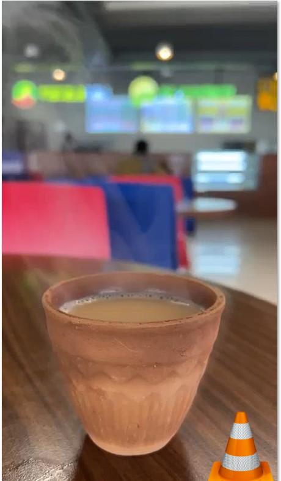
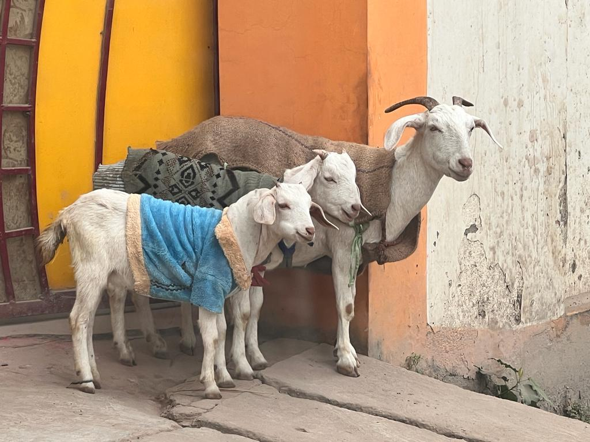
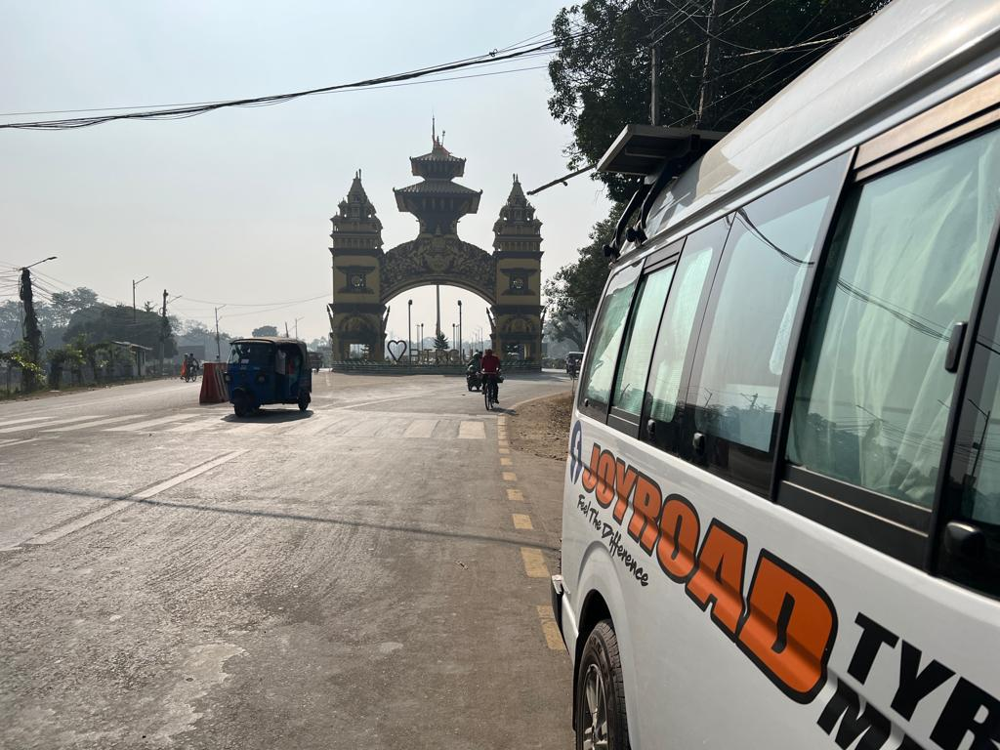

Real Story · 中文
26/11/2023，碎片太多了。
那一天，我正在往 Nepal 和 Kathmandu 的方向移动。 不是每一个记忆都是大事件。 有些记忆只是路边一杯 chai，一只穿衣服的小羊，一个 customs gate。
我喝了一杯 masala chai。杯子不是普通纸杯，也不像真正的 porcelain。 它更像印度常见的 kulhad，一种一次性的 clay cup。 喝完以后，有些地方会把它摔碎或丢掉。
这个细节很迷人。 一杯热热的 chai，装在一个来自泥土的小杯子里。 它被拿起，被喝完，然后又回到地面。
同一天，我又看到几只小 goats 穿着衣服站在墙边。 它们看起来太可爱，也太自然，好像在当地生活里这根本不是特别事情。 可是对我来说，它又变成一个很亮的小记忆。
然后是 Birgunj customs gate。 一旦到了 gate，路上的轻松碎片又变回现实： 文件、车辆、过境、下一个国家、继续往 Kathmandu。
那一天像这样，一直在切换。 一边是 chai 的热气，一边是边境的手续。 一边是穿衣服的小羊，一边是我要继续往 Nepal 山路前进。


English Memory Summary
Small fragments before Kathmandu.
On 26/11/2023, Tuzi was moving toward Nepal and Kathmandu. The day was full of small fragments rather than one single major event.
There was masala chai served in a small clay cup, similar to a disposable kulhad. There were little goats wearing clothes in Birgunj. And there was the customs gate, bringing the journey back to the reality of documents, vehicle clearance, and border crossing.
These fragments stayed together in memory: heat from the chai, the softness of the goats, and the seriousness of the border gate before the road climbed toward Kathmandu.
Heart Statement
有些日子不是一个故事。
它是一堆小碎片。
一杯热 chai。 几只穿衣服的小羊。 一个 customs gate。
它们看起来不属于同一个故事。 可是路就是这样把它们放在同一天， 然后变成我记得的 26/11/2023。
Some days are not one story. They are fragments that the road placed together.